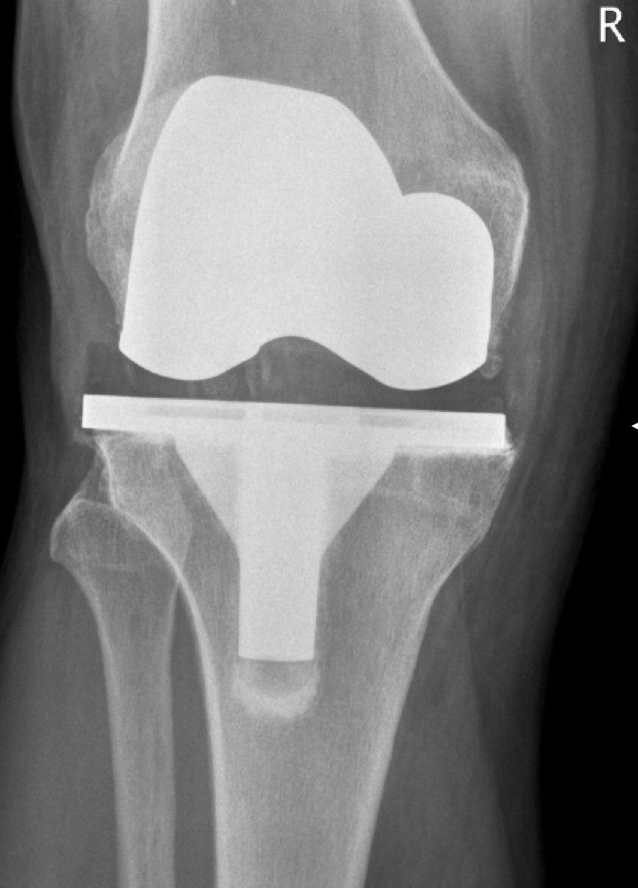

무릎 인공관절(TKA, Total Knee Arthroplasty)은 보통 15~20년이면 마모됩니다. 폴리에틸렌 라이너가 갈리고, 금속 베어링이 풀리고, 뼈와 보철 사이가 들뜹니다 — 재수술이 기다립니다.
사람의 무릎은 활액(synovial fluid)이 자가 윤활합니다. 연골은 70~80년을 견디고, 닳으면 어느 정도 회복합니다. 같은 일을 — 같은 방식으로 못합니다.
